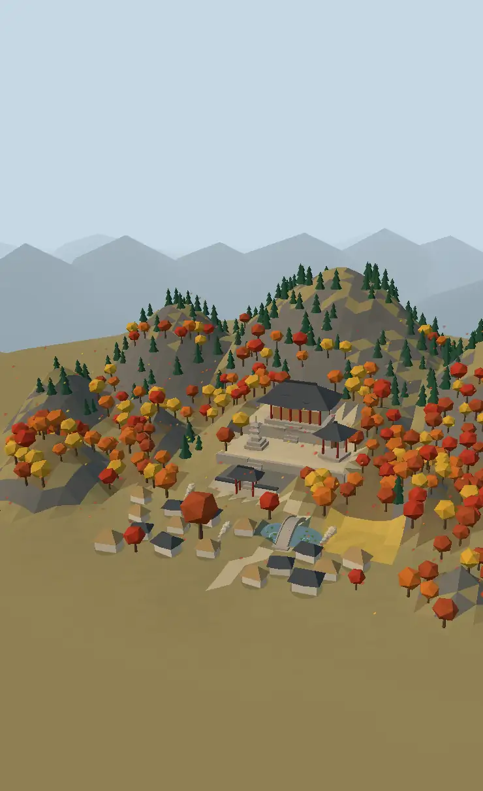

산문
마을과 절 사이
마을에서 절로 오르는 돌계단 앞에 선 문이에요. 기와지붕 아래를 지나면 절 마당까지 계단이 이어져요.

산 중턱의 오래된 절과 그 아래 작은 마을이에요. 계절을 고르면 나무와 지붕, 하늘빛이 바뀌어요.
끌어서 산사를 돌리고, 휠로 가까이 볼 수 있어요.
옆으로 끌어 산사를 돌리고, 가까이 보기 버튼으로 다가갈 수 있어요.
옆으로 밀어 산사를 돌리고, 두 손가락으로 가까이 볼 수 있어요.
명소를 고르면 그곳으로 가까이 가요.
목록에서 명소를 고르면 설명을 볼 수 있어요.
마을과 절 사이
마을에서 절로 오르는 돌계단 앞에 선 문이에요. 기와지붕 아래를 지나면 절 마당까지 계단이 이어져요.
절 맨 위 단
절에서 가장 크고 높은 건물이에요. 돌로 쌓은 높은 단 위에 처마 끝이 살짝 들린 넓은 기와지붕을 얹었어요.
본당 앞마당
본당 앞마당에 선 돌탑이에요. 지붕 모양 돌을 3층으로 쌓아 올렸어요.
마을 어귀
마을 어귀의 둥근 연못이에요. 둥글게 휜 돌다리를 건너면 산문으로 가는 흙길이 이어져요.
앞마당 동쪽 둔덕
큰 종을 매단 작은 정자 같은 건물이에요. 사방이 트여 있어 마을이 내려다보여요.